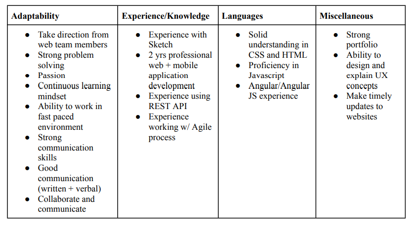

Exercise 1: The Value of UX
What's the Value of User Experience in Web Development and Design?
For this exercise, each team member had to do research on how User Experience Design will apply to our future jobs, our dream jobs. We came together to find similar skills between the jobs we found. Our team was able to reflect on our research and our findings between three different jobs. This will be a great future reference for when we are applying to jobs outside of college. Through this exercise we will have more of an understanding of what skills we should develop so that we can be the most successful in the future. We now have a strengthened strategic approach to our career development.
Our Job Search Activity
Shreya Guddeti
Crystal Garcia
Andreana Parafinczuk
Common Skills/Requirements
in progress
Summary
We each found jobs that we would like to go in that matches with our fields of study. After we had our separate skills written down we started grouping similar ones together. A clear common skill was communication and being collaborative. Another skill that we grouped was adaptability and experience with working with websites. Being able to work on them and update them when needed. We also learned that it is important to know many programming languages and to have a good amount of experience overall.
Credits
Group: Secondary Research on UX in Web Dev and Design